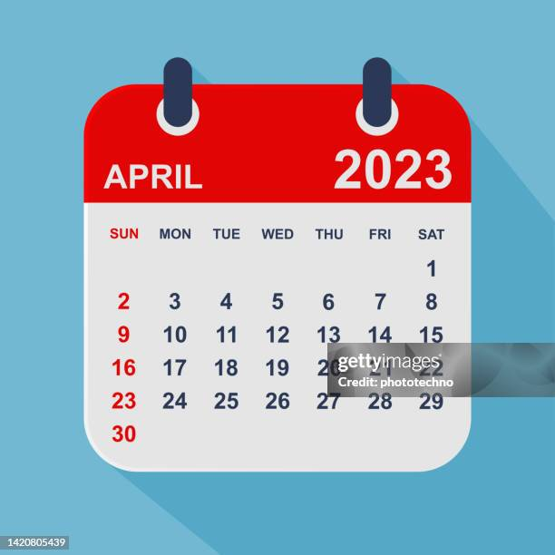

Virtual Medical Help Center
Our Virtual Medical Help Center provides immediate assistance to those affected by disasters. Connect with certified medical professionals for advice, prescriptions, and emergency care. Available 24/7...
